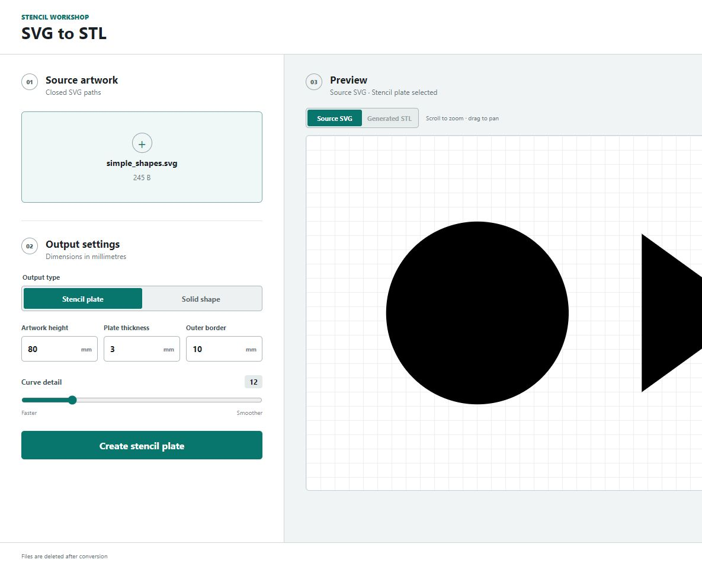
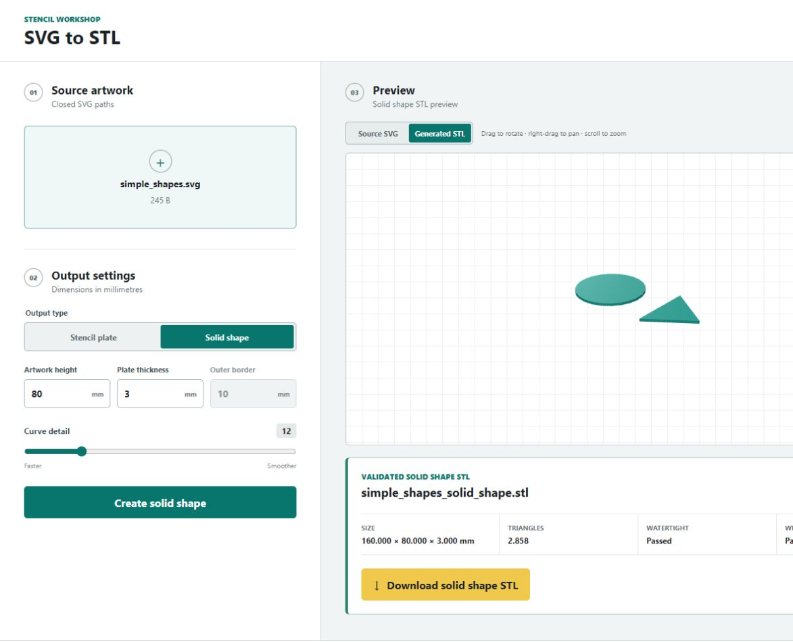

Create precise stencils. Keep your artwork private.
Unlike an online converter, this self-hosted service keeps your SVG on your own machine and network. Choose the finished height and border, generate a validated stencil plate locally, and preview the actual mesh before it reaches your slicer.
Captured from the running application180 × 100 × 3 mm · watertightMade for repeatable markingWorkshop labelsPaint masksCraft templatesSigns and symbols
Your design never needs an online converter
Artwork stays on the machine you control.
Your browser sends the SVG only to your self-hosted SVG to STL instance. Conversion happens in temporary storage on that host, the result returns directly to your browser, and the working files are deleted after the response.
No cloud conversion API, analytics service, CDN, or telemetry endpoint receives your artwork. Keep the service on a trusted LAN—or protect remote access with HTTPS and authentication—to preserve that boundary.
LOCAL TRUST BOUNDARYNo third-party conversion upload
What stencil mode actually creates
Your paths become openings, not raised shapes.
The converter places your artwork inside a rectangular plate and subtracts every closed contour. The result is one printable sheet that you can position, paint through, lift, and reuse.
Artwork height
Controls the finished height of your SVG contours in millimetres.
Outer border
Adds plate material around every side of the artwork.
Plate thickness
Sets the Z thickness of the printable stencil sheet.
Output
A validated binary STL with the _stencil.stl suffix.
The real browser workflow
From SVG preview to checked STL.
These are captures of the actual application using the included simple_shapes.svg example—not conceptual drawings.

01Inspect the SVG and choose dimensions
Pan and zoom the source artwork before conversion.
→02Rotate the generated stencil
Download appears after the mesh passes validation.
One SVG, two real outputs
Stencil is the main event. Solid shapes are included too.
PRIMARY MODE
STENCIL PLATE
The artwork is cut through a bordered plate.
Every closed contour becomes an opening. The surrounding border produces one connected plate that is simple to position and print.
REAL SOLID-SHAPE RESULTsimple_shapes_solid_shape.stl

The same SVG becomes two separate solid parts with no surrounding plate.
Prepare artwork that converts predictably
A good stencil starts with simple paths.
The service intentionally supports a small, predictable SVG subset. A few minutes of preparation in Inkscape or Illustrator prevents most conversion errors.
01
Convert everything to paths
Turn text, rectangles, circles, polygons, and visible strokes into path geometry before export.
02
Close every contour
Open strokes have no inside or outside, so only explicitly closed path contours are converted.
03
Design stencil bridges
Letters with enclosed centres, such as A, B, O, and P, need bridges so their interior islands remain attached.
04
Avoid nested or overlapping paths
Use independent, non-overlapping contours. Complex fill rules and nested islands are not resolved automatically.
Need exact preparation rules?The integrated usage guide lists every supported and unsupported SVG feature.
Confidence before download
The STL must pass before you can download it.
The service requires a positive enclosed volume with no boundary, non-manifold, degenerate, or duplicate triangles. Size and topology signals are returned with every successful file.
$ git clone https://github.com/tonyjurg/svg2stl-web.git
$ cd svg2stl-web
$ docker compose up --build -d
✓ service available at :8080
Keep the workshop local
Runs on your Synology or Docker host.
No account, subscription, telemetry, or cloud upload is required. The hardened non-root container accepts temporary uploads, builds the STL, and returns the result directly to your browser.